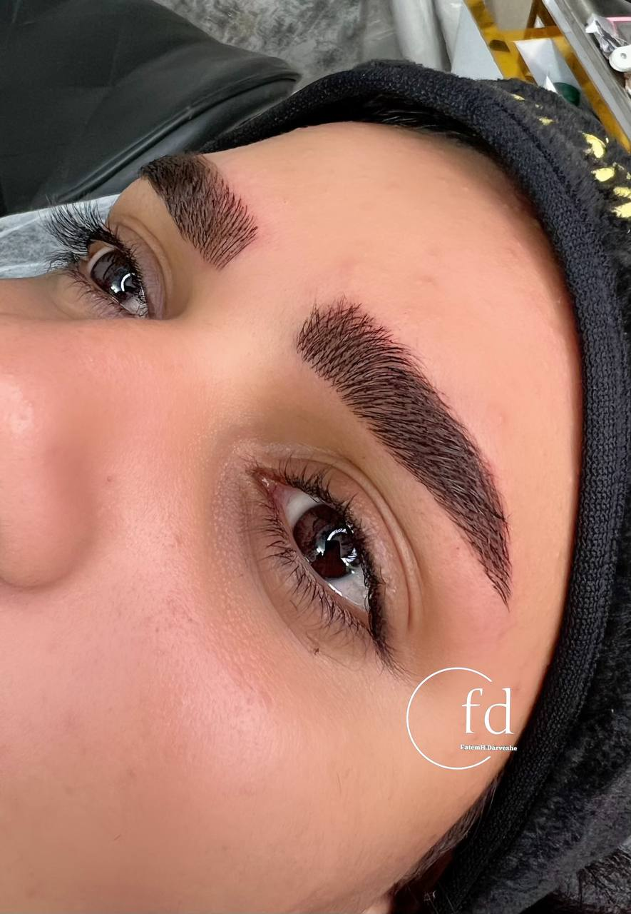

تفاوت میکروبلیدینگ و میکروپیگمنتیشن: کدام برای شما مناسبتر است؟
نوشته شده در تاریخ ۸ تیر ۱۴۰۴
یکی از بزرگترین سوالات و نقاط سردرگمی برای افرادی که به دنبال آرایش دائم ابرو هستند، انتخاب بین دو تکنیک اصلی یعنی **میکروبلیدینگ** و **میکروپیگمنتیشن** است. هر دو روش نتایج فوقالعادهای ایجاد میکنند، اما تفاوتهای کلیدی در روش اجرا، ماندگاری و ظاهر نهایی دارند. در این مقاله به صورت کامل این دو تکنیک را مقایسه میکنیم تا شما بتوانید با آگاهی کامل، بهترین گزینه را برای خود انتخاب کنید.
میکروبلیدینگ (Microblading) چیست؟
میکروبلیدینگ یک تکنیک **دستی** است که در آن از یک قلم (blade) با چندین سوزن بسیار ظریف استفاده میشود. با این قلم، خراشهای بسیار سطحی و دقیقی در لایه رویی پوست ایجاد شده و رنگدانهها در این خراشها کاشته میشوند. هدف اصلی میکروبلیدینگ، شبیهسازی تارهای موی طبیعی ابرو است. به همین دلیل به آن تکنیک هاشور مویی یا فیبروز هم گفته میشود.
میکروپیگمنتیشن (Micropigmentation) چیست؟
میکروپیگمنتیشن که به آن "آرایش دائم" هم میگویند، با استفاده از یک **دستگاه دیجیتال** انجام میشود. این دستگاه سوزن را با سرعت بالا به حرکت در میآورد و رنگدانهها را به لایه عمیقتری از پوست تزریق میکند. این روش بیشتر برای ایجاد یک حالت سایه پودری (Powdered Look) و پر کردن کامل قاب ابرو استفاده میشود و میتواند ظاهری شبیه به مداد ابروی دائم ایجاد کند.
جدول مقایسه سریع
| ویژگی | میکروبلیدینگ (فیبروز) | میکروپیگمنتیشن (آرایش دائم) |
|---|---|---|
| ابزار | قلم دستی (Blade) | دستگاه دیجیتال |
| عمق کاشت | سطحی (لایه اپیدرم) | عمیقتر (لایه درم) |
| ماندگاری | کمتر (حدود ۱ تا ۱.۵ سال) | بیشتر (حدود ۱ تا ۳ سال) |
| مناسب برای پوست | نرمال و خشک | انواع پوست (به خصوص چرب) |
| ظاهر نهایی | خطوط ظریف و طبیعی شبیه مو | سایه پودری و پر (شبیه مداد) |
کدام روش برای پوست چرب بهتر است؟
این یک نکته کلیدی است. در پوستهای چرب، چربی اضافی پوست میتواند باعث پخش شدن و محو شدن سریع خطوط ظریف میکروبلیدینگ شود. به همین دلیل، برای افرادی که پوست بسیار چربی دارند، **میکروپیگمنتیشن** با ایجاد حالت پودری، انتخاب بسیار بهتر و ماندگارتری است.
نتیجهگیری: بالاخره کدام را انتخاب کنم؟
انتخاب نهایی به نوع پوست و سلیقه شخصی شما بستگی دارد:
- اگر پوست **نرمال یا خشکی** دارید و به دنبال طبیعیترین حالت ممکن با خطوطی شبیه به تار موی واقعی هستید، **میکروبلیدینگ (فیبروز)** برای شما ایدهآل است.
- اگر پوست **چربی** دارید، یا به دنبال ظاهری پرتر، ماندگارتر و شبیه به ابرویی که با مداد یا سایه پر شده هستید، **میکروپیگمنتیشن** انتخاب هوشمندانهتری برای شما خواهد بود.
بهترین راه برای تصمیمگیری نهایی، یک جلسه مشاوره حضوری است. در این جلسه میتوانم با بررسی نوع پوست و فرم چهره شما، بهترین تکنیک را که زیبایی شما را دوچندان کند، پیشنهاد دهم.